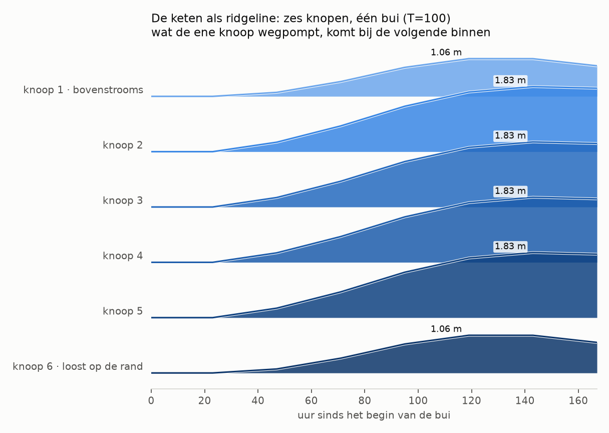
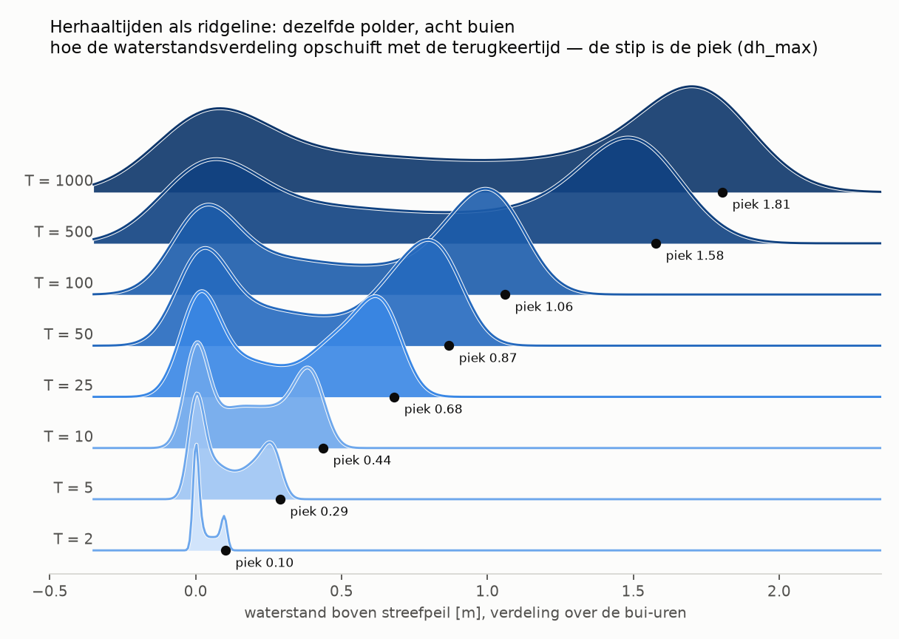
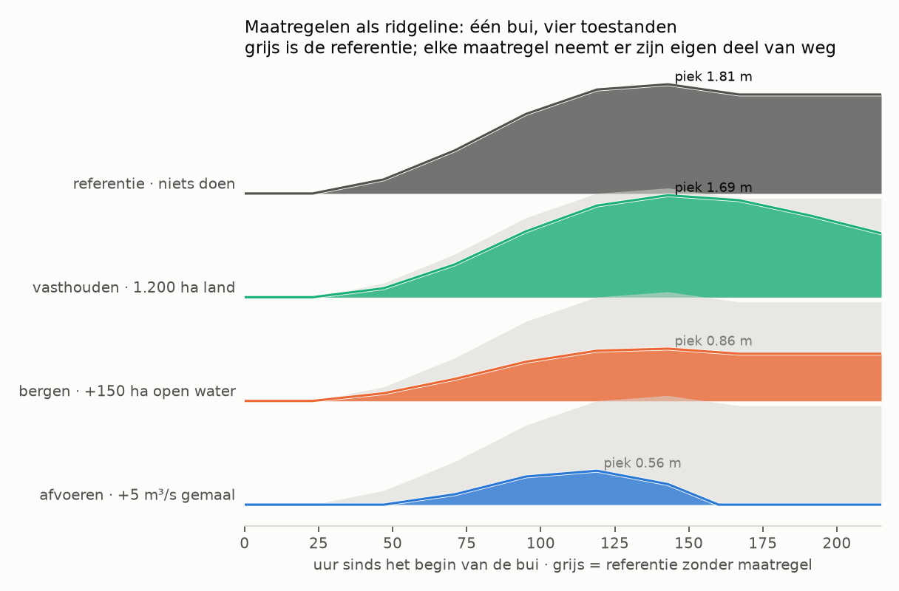
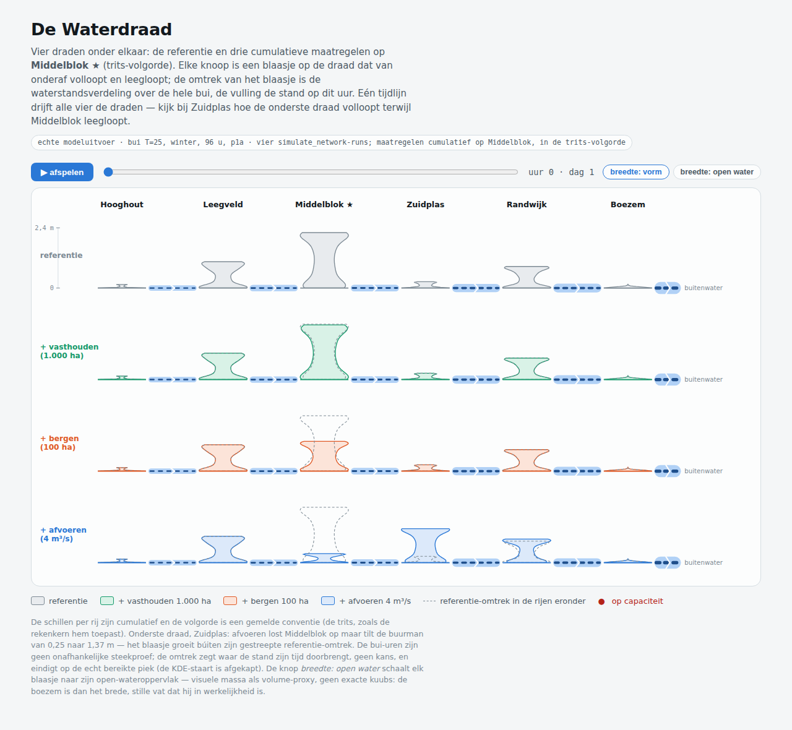
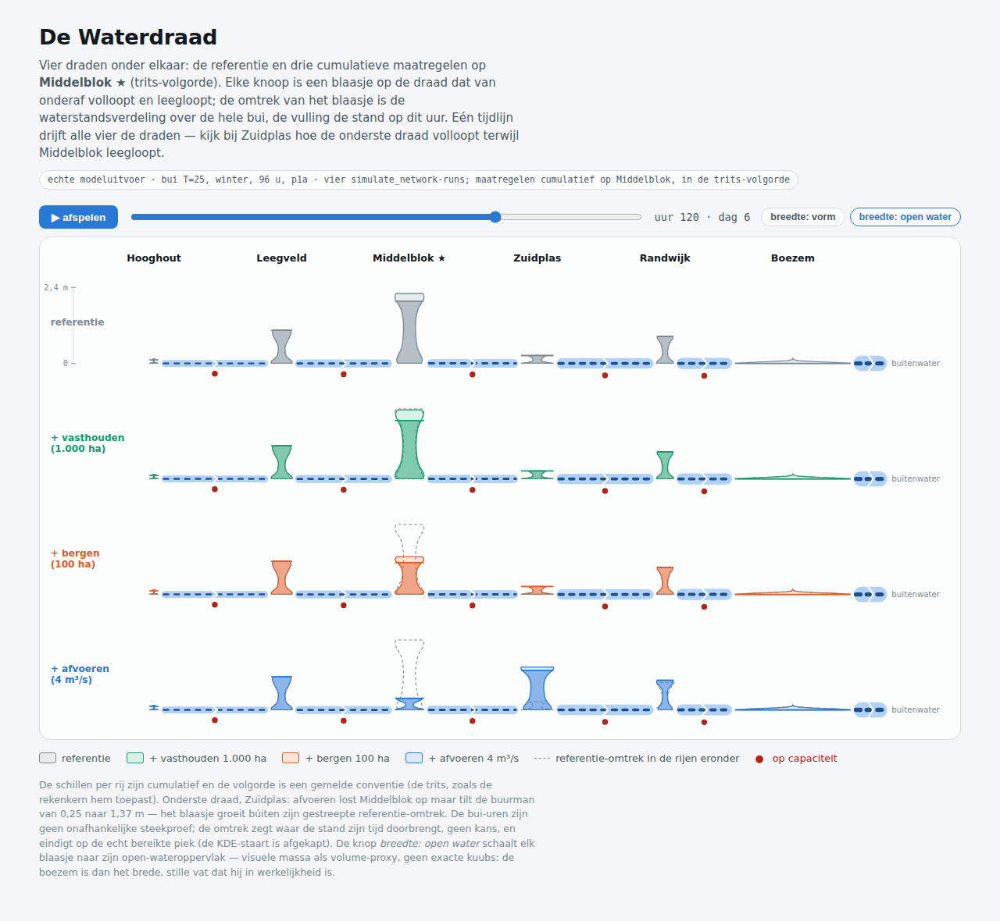
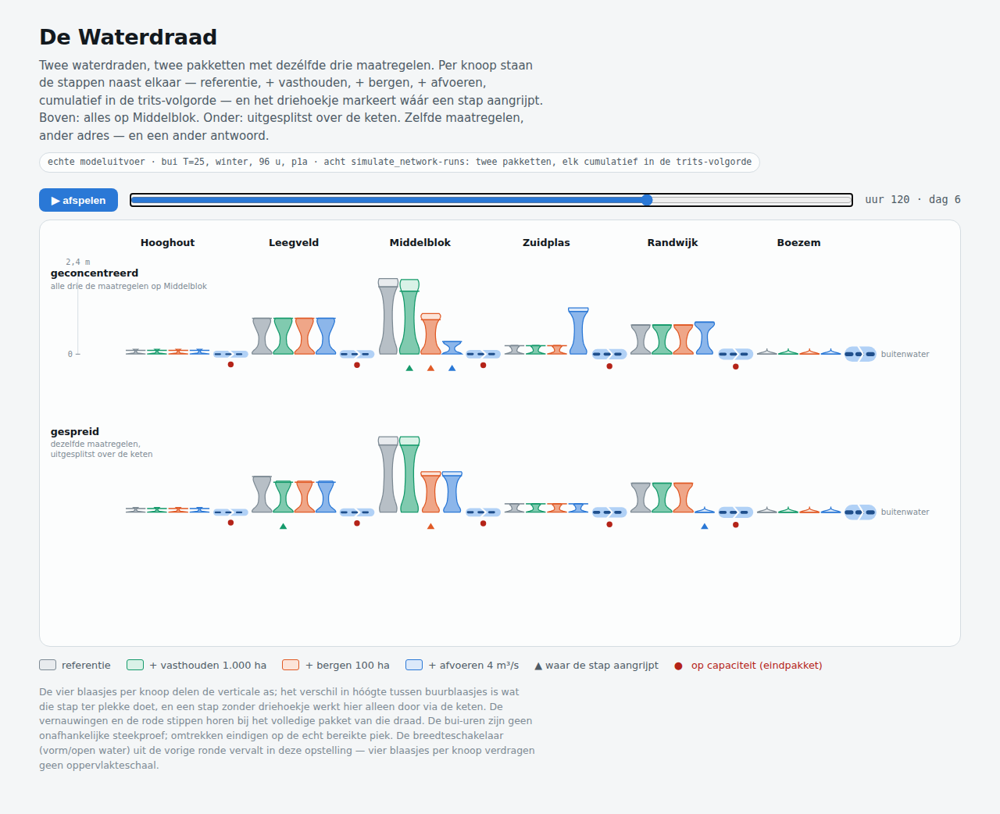
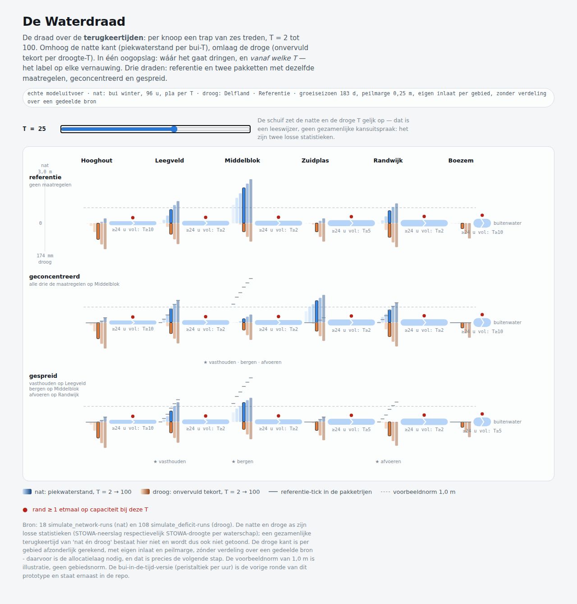
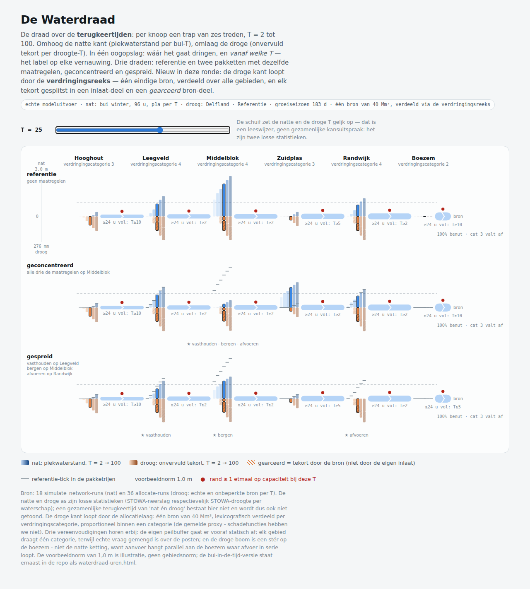

Notitie — de toestand als ridgeline: een compacte vorm voor PolderState en SystemState
Vastgelegd om verder te verkennen, nog geen plan. De vraag: bestaat er één compacte visualisatievorm die de onderdelen van een PolderState of SystemState naast elkaar zet zonder dashboard te worden? De kandidaat is de categorical ridgeline (gestapelde dichtheden of gestapelde reeksen met bewuste overlap), zie drhill.io/blog/ridgelineplots en het ggridges-gedachtegoed daarachter.
De drie varianten hieronder draaien op échte modeluitvoer (simulate en simulate_network op de referentiepolder), via scripts/verkenning_ridgelines.py.
Variant 1 — SystemState: de keten, elke knoop een rij

Zes knopen in een kralenketting, oplopende capaciteit stroomafwaarts, de rand met het boezemgemaal. Elke rij is de waterstandsreeks van één knoop; de rijen overlappen bewust zodat de cascade als één beeld leest. Bevinding uit de eerste poging: met gelijke capaciteiten klemmen de middenknopen alle vier op exact dezelfde stand — de ridgeline maakt in één oogopslag zichtbaar dat de keten tegen één klem loopt, wat in een tabel vier keer hetzelfde getal was geweest. Dat is precies het soort systeemuitspraak (vergelijk CascadeOutput: de bindende beperking en waar hij zit) waar deze vorm goed in is.
Variant 2 — herhaaltijden: de verdeling schuift op met T

Dezelfde polder, acht buien (T=2 t/m 1000), per rij de verdeling van de uurlijkse waterstanden. De tweetoppigheid is echt: de linkerbult is het begin van de bui, de rechterbult het plateau waar het gemaal het niet meer bijhoudt. Dit is de ruwe grondstof van de overschrijdingsfrequentielijn uit VERKENNING_BUDGETVRAAG.md §6 — dezelfde veeg, als verdeling getoond in plaats van als lijn.
Variant 3 — PolderState: maatregelen tegen hun referentie

Eén bui, vier toestanden: de referentie en drie maatregelen, elk met de referentie als grijs spook erachter. De vorm laat het karakter van elke maatregel zien — vasthouden vertraagt, bergen dempt, afvoeren pompt de staart weg — en dat is de visuele tegenhanger van de bijdrage-per-maatregel uit de frequentielijn-discussie.
Ontwerpkeuzes tot nu toe
- De ordening van de rijen draagt de betekenis: stroomafwaarts (variant 1), oplopende T (variant 2), of maatregel-identiteit (variant 3). Nooit alfabetisch.
- Kleur volgt het werk: sequentieel één blauw, licht → donker, voor geordende rijen (diepte, T); categorische kleuren in vaste volgorde alleen waar de rij een identiteit is (maatregelen).
- Overlap is een instelling, geen ongeluk — het ggridges-
scale-idee; hier ~0,85 van de rijafstand voor reeksen en ~1,5 voor dichtheden. - De uren van een bui zijn geen onafhankelijke steekproef (autocorrelatie); de dichtheden van variant 2 zijn dus een beeld van “waar de toestand zijn tijd doorbrengt”, geen kansverdeling. Dat hoort in elk bijschrift.
Open vragen voor de volgende ronde
- Welke onderdelen van de toestand verdragen één gedeelde as? Waterstand wel; voorraad, marge en kosten hebben elk hun eigen eenheid — een ridgeline per grootheid, of normaliseren tegen de eigen norm?
- De MGA-koppeling: de romp uit
VERKENNING_BUDGETVRAAG.md§5 als ridgeline — per maatregel de verdeling van zijn maatvoering over de near-optimale pakketten. - Renderkanaal: als los beeld (zoals hier), of interactief via MCP Apps bij een toolresultaat (spec 2026-07-28). Eerst moet de vorm zelf overtuigen.
- Donkere modus en het huisstijlpalet: dit is het referentiepalet uit de verkenning, niet de HKV-huisstijl.
Ronde 2 — de waterdraad: van rijen naar draden
De ridgeline-varianten hierboven splitsen op de y-as uit. De tweede ronde kantelt dat naar het beeld waar de zoektocht eigenlijk om draaide: de topologie als één horizontaal vat — elke knoop een verwijding (de waterstandsverdeling als rechtopstaand blaasje), elke verbinding een vernauwing met zijn capaciteit als dikte, elk gemaal een klep, en de bui die doortrekt als peristaltiek. Interactief (SVG/JS, geen matplotlib): het prototype staat in waterdraad.html naast deze notitie, de data komt uit scripts/verkenning_waterdraad.py (vier echte simulate_network-runs: referentie plus cumulatief vasthouden, bergen en afvoeren op Middelblok).


Wat deze ronde leerde
- De vulling hoort verticaal. De eerste versie vulde de violin langs zijn waarde-as, dus zijwaarts — cognitief verkeerd om voor water. De blaasjes staan nu rechtop (hoogte = waterstand, breedte = dichtheid) en lopen bij het afspelen van onderaf vol en leeg.
- Toestanden zijn losse draden onder elkaar, geen schillen in één draad. Een eerdere versie stapelde de voor/na-verdelingen als schillen in dezelfde verwijding; dat werd onleesbaar zodra een maatregel een verdeling liet gróeien. Vier complete draden onder elkaar (referentie + drie maatregelstappen) brengen de ridgeline-gedachte terug — rijen = toestanden, kolommen = knopen — en één tijdlijn drijft ze synchroon.
- De referentie-omtrek als gestreept spook in elke rij eronder maakt voor/na per blaasje leesbaar, en maakt afwenteling tot één beeld: afvoeren op Middelblok laat het eigen blaasje in zijn spook krimpen (2,21 naar 0,37 m) terwijl het blaasje van Zuidplas er búiten groeit (0,25 naar 1,37 m; zijn rand van 108 naar 144 u op capaciteit).
- Breedte is een keuze met twee eerlijke standen. Vormmodus (gelijke breedte) vergelijkt verdelingsvormen; gewichtsmodus (breedte evenredig met het open-wateroppervlak) leest als visuele massa — de boezem wordt het brede stille vat dat hij is, Hooghout het smalle. Het is een proxy en geen kuubs, en zo staat het ook op de pagina.
- KDE-hygiëne: de omtrek is afgekapt op het echt bereikte bereik van de reeks; zonder die afkap tekende de staart een haarlijn boven de werkelijke piek.
Ronde 3 — één pakket is weer één draad, de stappen als cluster per knoop
De vier draden van ronde 2 gaven elke maatregelstap een eigen draad, en dat verspilt de rij-as aan iets dat geen alternatief is. Ronde 3 draait het om (voorstel Mattijn): de stappen staan als x-offset-cluster naast elkaar per knoop — referentie, + vasthouden, + bergen, + afvoeren, vier smalle blaasjes — zodat één pakket weer één waterdraad is. De rij-as komt daarmee vrij voor waar hij hoort: wezenlijk verschillende pakketten. De eerste vergelijking die dat oplevert is meteen de leerzaamste die deze keten heeft:

- geconcentreerd (alles op Middelblok): Middelblok van 2,21 naar 0,37 m, maar Zuidplas van 0,25 naar 1,37 m — de afwenteling zit nu ín het cluster (het blauwe blaasje torent boven zijn drie buren uit) — en vier randen staan 144 u op capaciteit;
- gespreid (vasthouden op Leegveld, bergen op Middelblok, afvoeren op Randwijk): iedereen een beetje geholpen, niemand verzopen — Zuidplas blijft 0,25 m, Randwijk gaat zelfs naar 0 — en de keten staat korter op capaciteit (120/108/120 u in plaats van drie keer 144). De prijs: Middelblok blijft op 1,20 m staan in plaats van 0,37.
Zelfde drie maatregelen, ander adres, ander antwoord — de trap-van-ambitie-les van kaart-is-een-keuze.svg, maar nu gerekend in plaats van verzonnen. De driehoekjes markeren per draad waar een stap aangrijpt; een blaasje dat verandert zónder driehoekje verandert via de keten. De breedteschakelaar (vorm/open water) uit ronde 2 vervalt in deze opstelling: vier blaasjes per knoop verdragen geen oppervlakteschaal, dus die twee lezingen sluiten elkaar voorlopig uit — een echte afruil om te onthouden.
Open voor ronde 4
- de rijen vullen met de near-optimale pakketten uit de MGA-verkenning (VERKENNING_BUDGETVRAAG.md §5) in plaats van met de hand gekozen alternatieven — dan is dit beeld de presentatielaag van de vlakvraag;
- de droge kant als tweede helft van het vat (onder de draad), zodra de voorraden-doorrekening per knoop beschikbaar is;
- vertakkende topologieën — dit is een ketting, een boom vraagt splitsende draden;
- het buiprofiel als klein verloop bij de tijdlijn, zodat de peristaltiek aan zijn aanleiding gekoppeld is;
- normalisatie per blaasje versus over de hele draad, en de vorm/gewicht-afruil hierboven — beide blijven gemelde keuzes.
Ronde 4 — de draad over de terugkeertijden
De praktijkvraag die deze ronde afdwong: het gaat nooit over één terugkeertijd — je wilt in één beeld zien bij welke T het gaat dringen, en dat voor wateroverlast én watertekort tegelijk. Drie ankers uit de literatuur (augustus 2026) zetten de vorm:
- de EP-curve (prestatie tegen overschrijdingskans) is de standaardvorm voor de ene as — Mattijns frequentielijn uit issue #37, hier als trap van zes treden per knoop;
- de adaptation-pathways-school levert het woord voor “waar het gaat dringen”: het knikpunt — de stressorwaarde waarbij het systeem zijn norm of capaciteit verliest. Op de draad is dat per vernauwing af te lezen: “≥ 24 u vol vanaf T=…”;
- de copula-literatuur over compound droogte-overstromingsrisico geeft de grens: een gezamenlijke terugkeertijd van “nat én droog” vergt afhankelijkheidsmodellering die twee losse STOWA-producten niet dragen. De T-schuif zet beide assen daarom wel géljk maar de pagina meldt expliciet: leeswijzer, geen gezamenlijke kansuitspraak.

De vorm: per knoop een trap van zes treden (T = 2 … 100), nat omhoog (piek per bui-T, blauwe reeks) en droog omlaag (onvervuld tekort per droogte-T, warme reeks, eigen mm-as); drie draden (referentie, geconcentreerd, gespreid); referentie-ticks in de pakketrijen; de tijdas van de vorige rondes is vervangen door een T-schuif. Het prototype staat in waterdraad.html, de uur-versie (peristaltiek) ernaast als waterdraad-uren.html; de data komt uit verkenning_waterdraad_terugkeertijden.py (18 netwerk- en 108 deficit-runs).
Wat deze ronde leerde
- De droge kant is pas informatief mét inlaat en peilmarge. Zonder die twee is het tekort in elk gebied exact het neerslagtekort — een dode kolom. Met een eigen inlaat per gebied krijgt elk gebied zijn droge knikpunt (Hooghout komt al bij T=5 tekort, de Boezem pas bij T=25).
- De peilmarge veranderde ook het natte knikpunt-criterium. Met 0,25 m marge draait élk gemaal ook bij T=2 een paar uur op capaciteit (de marge wordt leeggemalen), dus “ooit vol” is te binair; het criterium is nu minstens een etmaal, en dat staat als conventie op de pagina.
- Natte maatregelen doen droog vrijwel niets — alleen bergen scheelt millimeters (groter open water = grotere buffer). Dat is geen tekortkoming van het beeld maar van het pakket, en precies wat de twee assen naast elkaar moeten laten zien.
- De droge kant is hier per gebied afzonderlijk gerekend, zonder verdeling over een gedeelde bron; de allocatielaag (verdringingsreeks) is de ontbrekende koppeling en staat bovenaan voor ronde 5.
Open voor ronde 5
- de droge kant door
allocatelaten lopen (gedeelde bron, verdringingsreeks) in plaats van per gebied een eigen oneindige inlaatbron te veronderstellen; - echte gebiedsnormen in plaats van de voorbeeldnorm van 1,0 m, en de tekortnorm aan de droge kant;
- de rijen vullen met near-optimale MGA-pakketten (agenda ronde 3, blijft staan);
- een gezamenlijke nat-droog-kansuitspraak alléén als er afhankelijkheidsdata komt (copula op gekoppelde reeksen) — tot die tijd blijft de schuif een leeswijzer.
Ronde 5 — de droge kant door de verdringingsreeks
De agenda-kop van ronde 4 is uitgevoerd: de droge kant loopt niet langer per gebied tegen een eigen oneindige bron, maar door allocate — één eindige bron (40 Mm³ over het seizoen), lexicografisch verdeeld per verdringingscategorie, proportioneel binnen een categorie. Twee allocate-runs per T (echte en onbeperkte bron) splitsen elk tekort in een inlaat-deel en een bron-deel; dat laatste is gearceerd — de gestapelde dichtheid uit de eerdere rondes keert terug als gestapelde oorzaak.

Wat deze ronde leerde
- De droge boom is niet de natte ketting. De eerste opzet hergebruikte de afvoertopologie voor de aanvoer, en toen moest alle vraag door de boezem-inlaat van de keten: die ene inlaat werd de flessenhals voor het hele stelsel en de bron werd nooit meer dan 40% benut. Aanvoer hangt parallel als stér aan de boezem waar afvoer in serie loopt — de waterdraad heeft dus twee topologieën in één beeld, en dat is geen visualisatieprobleem maar een systeemeigenschap.
- De verdringingsreeks is nu zichtbaar als gedrag: vanaf T=10 is de bron vol benut, houdt categorie 2 (de boezem) nul tekort, blijft categorie 3 beperkt en draagt categorie 4 de bron-tekorten — de schillen van
allocateals beeld, met per draad de meebewegende status (“100% benut · cat 3 valt af”). - Het bron/inlaat-onderscheid verschilt per gebied en is precies het advies- onderscheid uit de allocatietool: Hooghout komt tekort door zijn eigen inlaat (meer aanvoeren helpt daar niet), Middelblok vooral door de bron (daar helpt alleen meer water of een andere verdeling).
Gemelde vereenvoudigingen
De eigen peilbuffer gaat er vooraf statisch af (de echte tijdsdynamiek van buffer én verdeling samen is een kernvraag, geen visualisatievraag); elk gebied draagt één verdringingscategorie terwijl echte vraag gemengd is over de posten (de vraagposten-data uit PR #61 is de weg naar beter); en het bronvolume van 40 Mm³ is een gekozen demo-waarde.
Open voor ronde 6
- de gemengde vraag per gebied (drie posten per knoop via
demand_posts.json) in plaats van één categorie per gebied; - echte gebiedsnormen op beide assen; de voorbeeldnorm van 1,0 m blijft illustratie;
- de rijen vullen met near-optimale MGA-pakketten (staat sinds ronde 3);
- de tijdsdynamische koppeling van buffer, inlaat en verdeling — een kernvraag die eerst een eigen plan verdient.